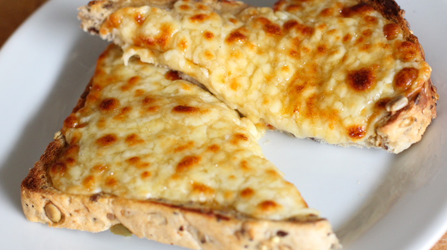

Cheese on Toast

Cheese on toast
Another great comfort feed that is super simple to make. Confusingly called Welsh Rarebit by some, cheese on toast is a classic.
Ingredients
- 2 Slices of bread, either toastie bread or some seeded batch loaf
- Sliced cheese, enough to about covcer both pieces of bread.
Steps
- Grill one side of the bread, whilst slicing the cheese
- Place the cheese on the untoasted side of the bread and put back under the grill.
- Grill until cheese has fully melted and is bubbling
- Slice in half and serve.